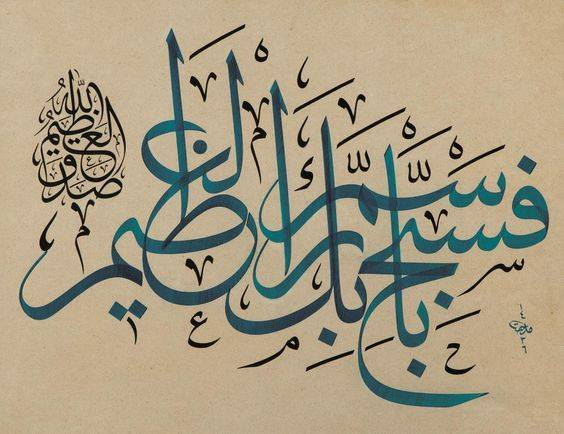

vehuvel-‘aliyyul-‘azîm O yücedir, uludur

Rüku ve secdeye değer katan iki güzel isim, biri yücelik diğeri ululuk sıfatı, sık okunan
Âyetul-kursînin ve
Şûra 4. âyetin sonunda:
vehuvel-‘aliyyul-‘azîm O yücedir, uludur
Âyetül-kürsî’nin fazileti hakkındaki bazı hadislerde Hz. Peygamber Kur’an’da en büyük âyetin Âyetül-kürsî olduğunu, yatağına girerken onu okuyan kimseyi Allah’ın koruyacağını ve şeytanın ona yaklaşamayacağını, bu âyetin içinde Allah’ın en yüce isminin bulunduğunu ve Kur’an âyetlerinin efendisi olduğunu haber vermiştir.
Kaynak: İslam Ansiklopedisi
Rükudaki tesbihin emri Vâkı'a Suresinde:
56:96
fesebbih bismi rabbikel-‘azîm
Yüce Rabbinin adını tesbih et!

El-‘azîm, çok önemli bir hadisin son kelimesi: